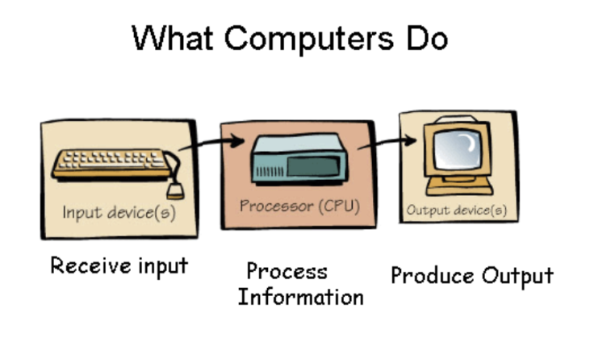
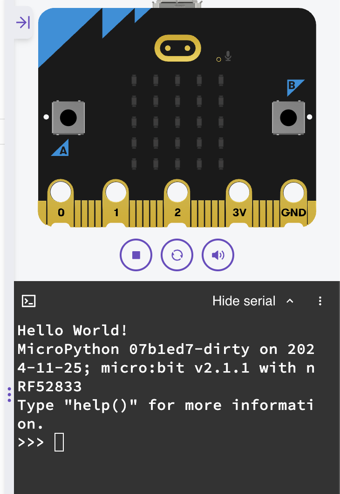

1. Introduction to micro:bit with Python
1.1 What is micro:bit?
The micro:bit is a small, programmable device that introduces learners to coding through hands-on projects. Using Python via the user-friendly python.microbit.org editor makes it ideal for beginners, as its simple interface and clear syntax help build confidence and foundational programming skills quickly.
1.2 
1.3 What is Python?
Python is a high-level programming language that is designed to be:
- Easy to read
- Simple to learn
- Powerful enough to build real applications
Python uses clear, nearly plain-English syntax, which makes it a great language for beginners.
1.4 Why Use Python with the micro:bit?
We use Python to program the micro:bit because:
-
Easy to understand
Python code is simple and readable, making it ideal for learning programming concepts. -
Focus on problem-solving
You can spend more time creating ideas and less time worrying about complicated syntax. -
Works well with hardware
Python lets you easily control micro:bit features like LEDs, buttons, and sensors. -
Transferable skill
Python is widely used in real-world fields such as data, web development, and automation.
1.5 micro:bit online editor
We will write and test our code online using the official micro:bit Python editor:
https://python.microbit.org/v/3
The site has allows us to send code to our micro:bit, but we can also run our code in the built-in simulator to see how it works before sending it to the device.
The simulator is useful as it lets you:
- Write Python code
- Run your program instantly
- See virtual LEDs, buttons, and sensors in action
1.6 What is a Program?
A program is a set of instructions that a computer can execute to perform a specific task. In Python, a program is typically written in a text file with a .py extension. When you run the program, the Python interpreter reads the code and executes it line by line. Generally, a program requires input, processing, and output. The input is the data that the program will work with, the processing is the logic and calculations performed on that data, and the output is the result of the program's execution.

1.7 Variables
In Python, variables are used to store data values. A variable is essentially a name that references a specific piece of data (like a number, string, or list). You can assign a value to a variable using the assignment operator =, and then use that variable later in your code.
1 2 3 4 | |
In the above code:
- Line 3 - Sets a variable named
lengthto the value of10 - Line 4 - Scrolls the value of
lengthacross the micro:bit display
Note
Notice in line 4 that the micro:bit displays 10 because the length variable was created and set to 10 previously.
1.8 Setting values to variables
Setting values to variables is a fundamental part of programming in Python. You use the assignment operator = to give a variable a value. Recalling the value only requires you to use the name of the variable.
You can set multiple variables and use them to set up other variables.
1 2 3 4 5 6 | |
In the above we now have three variables. length_1 and length_2 are set to 12 and 3 respectively. length_3 is the sum of length_1 and length_2.
Based on line 6, what number will the micro:bit display?
Variables can be called multiple times:
1 2 3 4 5 6 7 8 9 10 11 | |
This time the micro:bit scrolls three separate numbers across the display. Notice that we make the micro:bit wait in between each scroll using sleep(). sleep() takes a value in milliseconds, so we multiply length_2 by 1000 to convert seconds to milliseconds.
How long is the micro:bit waiting after each scroll?
We can make the micro:bit do a little display animation:
1 2 3 4 5 6 7 8 9 10 11 12 13 | |
Note
We've changed the names of the variables to left_image, right_image, and wait_time. It's important and useful to name variables with names that are descriptive.
Line 11 shows the left_image arrow again, and line 13 shows the right_image arrow again. Notice that wait_time is used throughout to keep the timing consistent — changing it in one place (line 5) changes the timing everywhere. Why is that useful?
1.9 print()
print() is a built-in function that outputs text to the console. It is commonly used for debugging and displaying information while developing code. You can view the result of the print() function by opening the serial part of the micro:bit editor.

1 2 3 4 5 6 7 | |
1.10 Class Activity
Add more to the display animation above by adding up and down arrows. See the micro:bit documentation at https://python.microbit.org/v/3/api/microbit.Image or just experiment!